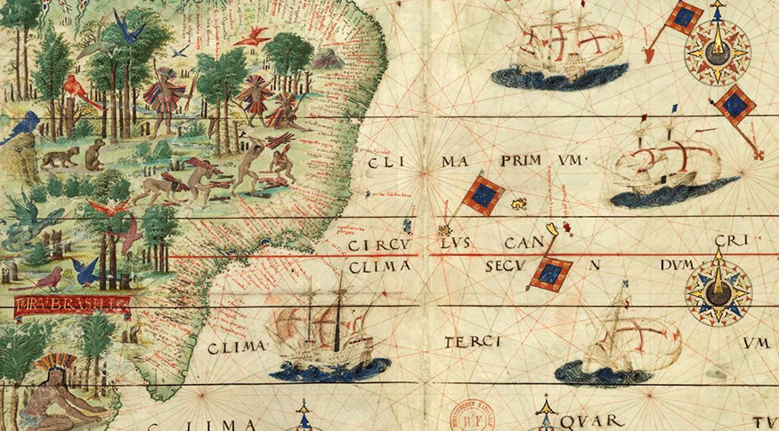

Pau-Brasil
O pau-brasil foi o primeiro item explorado pelos portugueses com base no seu valor mercantil. Para isso, instalaram feitorias e contrataram o trabalho dos indígenas.
Mapa produzido no século XVI, retratando a exploração do pau-brasil realizada pelos indígenas.
O pau-brasil é muito conhecido, porque sua exploração foi a primeira atividade econômica exercida pelos portugueses na América Portuguesa durante o século XVI. A exploração do pau-brasil foi muito intensa, principalmente em uma fase conhecida como Período Pré-colonial, que se estendeu até meados da década de 1530. A exploração da madeira ocorria por meio do escambo com os indígenas.
Contexto histórico
Desembarque de Cabral em Porto Seguro, óleo sobre tela de Oscar Pereira da Silva, 1922.
A exploração do pau-brasil, durante o século XVI, estava inserida no contexto da chegada dos portugueses na América. A chegada dos portugueses ao Brasil foi em 22 de abril de 1500, quando a expedição de Pedro Álvares Cabral avistou o Monte Pascoal, na atual região de Porto Seguro, no estado da Bahia.
A chegada dos portugueses ao Brasil deu início ao processo de exploração das terras. Esse processo só se tornou um processo colonizatório na década de 1530, quando foi implantado o sistema de capitanias hereditárias. Antes da implantação do sistema de capitanias, a presença dos portugueses era exclusivamente litorânea por meio de feitorias.
Como era a feita a exploração do pau-brasil?
A exploração do pau-brasil pelos portugueses era acompanhada pelas feitorias construídas pelos portugueses em locais litorâneos da América Portuguesa. As principais feitorias construídas pelos portugueses, nesse primeiro momento de sua presença na América, foram as feitorias localizadas no Cabo Frio, Porto Seguro e Igarassu (Pernambuco).
As feitorias portuguesas eram basicamente locais nos quais os portugueses armazenavam toda a madeira extraída. As feitorias eram cercadas por uma paliçada de madeira que os resguardava de possíveis ataques de povos indígenas hostis e de estrangeiros que, nesse caso, eram os franceses os grandes concorrentes dos portugueses na exploração do pau-brasil.
O funcionamento das feitorias, em grande parte, foi resultado do registro feito durante a chegada da embarcação Bretoa, que esteve na América Portuguesa, em 1511, como citamos anteriormente. Nessas feitorias, os portugueses contratavam o trabalho dos indígenas para que eles realizassem o trabalho de derrubada das árvores.
Isso porque as árvores de pau-brasil não ficavam amontoadas umas próximas às outras, mas eram espalhadas pela floresta e, assim, o conhecimento do território pelos indígenas os possibilitava localizar as árvores com mais facilidade. A relação de trabalho era pelo escambo. Os índios extraíam e levavam as toras para as feitorias, e os portugueses retribuíam pagando-lhes com facas, canivetes, espelhos e outros objetos do tipo.
A necessidade de construção das feitorias foi explicada pelo historiador Jorge Couto que afirmou que as feitorias foram construídas, porque na expedição de Gonçalo Coelho pela costa brasileira, em 1501-1502, os portugueses perceberam que o trabalho de extração da madeira enquanto as naus estavam ancoradas no litoral brasileiro era muito caro e, por isso, foi proposta a construção de feitorias que armazenariam a madeira extraída para que, de tempos em tempos, uma nau viesse recolher as toras.
As boas relações com os indígenas eram uma condição essencial para o sucesso da feitoria, uma vez que era por meio do trabalho deles que a extração da madeira era realizada. A fortificação da feitoria ou sua construção próxima a um forte era também essencial, pois garantia a segurança dessa feitoria.
Isso porque, além dos povos indígenas hostis, os portugueses lidavam com os franceses que, nos primeiros anos do século XVI, invadiram as terras portuguesas (segundo o Tratado de Tordesilhas) para negociar com os indígenas e contrabandear pau-brasil para a Europa. Um exemplo foi a expedição de Paulmier de Gonneville que veio para cá em 1503 para tentar explorar o pau-brasil.
A crescente presença francesa na costa brasileira forçou Portugal a investir no desenvolvimento de expedições que tinham como função monitorar a costa brasileira. Essas expedições, caso avistassem embarcações francesas, tinham autorização para abrir fogo. Os franceses, inclusive, tentaram estabelecer-se no Brasil, primeiro no Rio de Janeiro e depois no Maranhão.
Consequências da exploração

A intensa exploração do pau-brasil quase levou a árvore à extinção e, ainda hoje, ela é considerada uma espécie ameaçada
A exploração do pau-brasil foi o meio pelo qual os portugueses instalaram-se no Brasil. Por meio dela, instalaram feitorias e fortes na costa brasileira e estabeleceram relações amigáveis com certos povos indígenas.
Essa atividade, porém, aconteceu em proporção tão intensa que foi responsável pela quase extinção do pau-brasil, já que milhões de árvores foram derrubadas. A extração da madeira seguiu sendo realizada até meados do século XIX, e a recuperação da quantidade de árvores na natureza somente aconteceu na segunda metade do século XX.